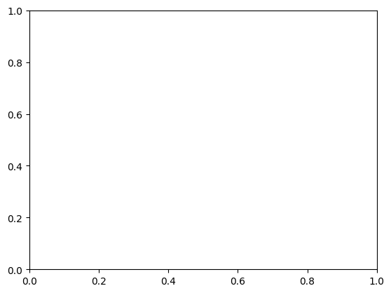
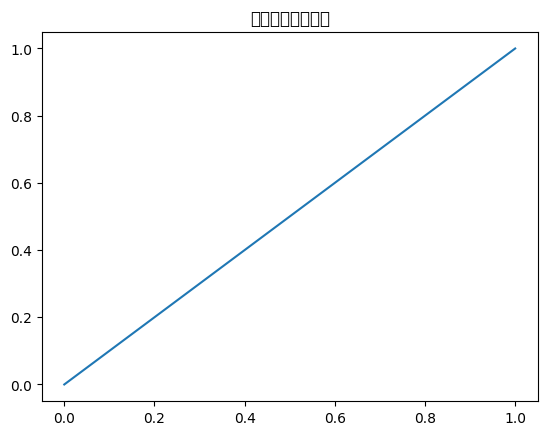

pandasとMatplotlibによる可視化¶
使用データ¶
※事前に、 05-evaluation/05-01-data.ipynb のコードをすべてを実行して、生成される 05-evaluation/data/penguins.parquet を appendix/data/penguins.parquet にコピーしてください。
[1]:
%%bash
mkdir -p ./data && cp ../05-evaluation/data/penguins.parquet ./data/.
[2]:
import matplotlib.pyplot as plt
import numpy as np
import pandas as pd
df = pd.read_parquet("data/penguins.parquet")
df.head()
---------------------------------------------------------------------------
ImportError Traceback (most recent call last)
Cell In[2], line 5
2 import numpy as np
3 import pandas as pd
----> 5 df = pd.read_parquet("data/penguins.parquet")
6 df.head()
File ~/workspace/musashiuniv/musashiuniv_manuscript/.venv/lib/python3.12/site-packages/pandas/io/parquet.py:653, in read_parquet(path, engine, columns, storage_options, use_nullable_dtypes, dtype_backend, filesystem, filters, **kwargs)
500 @doc(storage_options=_shared_docs["storage_options"])
501 def read_parquet(
502 path: FilePath | ReadBuffer[bytes],
(...) 510 **kwargs,
511 ) -> DataFrame:
512 """
513 Load a parquet object from the file path, returning a DataFrame.
514
(...) 650 1 4 9
651 """
--> 653 impl = get_engine(engine)
655 if use_nullable_dtypes is not lib.no_default:
656 msg = (
657 "The argument 'use_nullable_dtypes' is deprecated and will be removed "
658 "in a future version."
659 )
File ~/workspace/musashiuniv/musashiuniv_manuscript/.venv/lib/python3.12/site-packages/pandas/io/parquet.py:68, in get_engine(engine)
65 except ImportError as err:
66 error_msgs += "\n - " + str(err)
---> 68 raise ImportError(
69 "Unable to find a usable engine; "
70 "tried using: 'pyarrow', 'fastparquet'.\n"
71 "A suitable version of "
72 "pyarrow or fastparquet is required for parquet "
73 "support.\n"
74 "Trying to import the above resulted in these errors:"
75 f"{error_msgs}"
76 )
78 if engine == "pyarrow":
79 return PyArrowImpl()
ImportError: Unable to find a usable engine; tried using: 'pyarrow', 'fastparquet'.
A suitable version of pyarrow or fastparquet is required for parquet support.
Trying to import the above resulted in these errors:
- Missing optional dependency 'pyarrow'. pyarrow is required for parquet support. Use pip or conda to install pyarrow.
- Missing optional dependency 'fastparquet'. fastparquet is required for parquet support. Use pip or conda to install fastparquet.
散布図¶
pandasによる可視化¶
[3]:
df.plot(
x="Culmen_Length",
y="Flipper_Length",
kind="scatter",
c="Species_short",
colormap="Dark2",
);
---------------------------------------------------------------------------
NameError Traceback (most recent call last)
Cell In[3], line 1
----> 1 df.plot(
2 x="Culmen_Length",
3 y="Flipper_Length",
4 kind="scatter",
5 c="Species_short",
6 colormap="Dark2",
7 );
NameError: name 'df' is not defined
[4]:
# 種ごとに点の色と形（マーカー）を設定する準備
codes = df.loc[:, "Species_short"].cat.codes # 後で使う
cm = plt.get_cmap("Dark2")
markers = [".", "s", "^"] # ●、■、▲
# 種ごとにグループ化
df_grouped = df.groupby("Species_short")
---------------------------------------------------------------------------
NameError Traceback (most recent call last)
Cell In[4], line 2
1 # 種ごとに点の色と形（マーカー）を設定する準備
----> 2 codes = df.loc[:, "Species_short"].cat.codes # 後で使う
3 cm = plt.get_cmap("Dark2")
4 markers = [".", "s", "^"] # ●、■、▲
NameError: name 'df' is not defined
[5]:
_, ax_scatter_pandas = plt.subplots()
for i, v in enumerate(df_grouped):
label, group = v
group.plot(
x="Culmen_Length",
y="Flipper_Length",
kind="scatter",
color=cm(i),
marker=markers[i],
label=label,
ax=ax_scatter_pandas, # 重ね打ち
)
---------------------------------------------------------------------------
NameError Traceback (most recent call last)
Cell In[5], line 2
1 _, ax_scatter_pandas = plt.subplots()
----> 2 for i, v in enumerate(df_grouped):
3 label, group = v
4 group.plot(
5 x="Culmen_Length",
6 y="Flipper_Length",
(...) 11 ax=ax_scatter_pandas, # 重ね打ち
12 )
NameError: name 'df_grouped' is not defined

Matplotlibによる可視化¶
[6]:
_, ax_scatter_matplotlib = plt.subplots()
for i, v in enumerate(df_grouped):
label, group = v
ax_scatter_matplotlib.scatter(
x=group["Culmen_Length"],
y=group["Flipper_Length"],
color=cm(i),
marker=markers[i],
label=label,
)
ax_scatter_matplotlib.legend() # 凡例を表示
plt.show()
---------------------------------------------------------------------------
NameError Traceback (most recent call last)
Cell In[6], line 2
1 _, ax_scatter_matplotlib = plt.subplots()
----> 2 for i, v in enumerate(df_grouped):
3 label, group = v
4 ax_scatter_matplotlib.scatter(
5 x=group["Culmen_Length"],
6 y=group["Flipper_Length"],
(...) 9 label=label,
10 )
NameError: name 'df_grouped' is not defined

折れ線グラフ¶
調査年と種ごとの平均体重の計算¶
[7]:
df_avg_weight_year = (
df.assign(
year=df.loc[:, "Date_Egg"].dt.to_period("Y")
) # pandasのPeriodオブジェクト（周期の単位：年）
.groupby(["Species_short", "year"], as_index=False)["Body_Mass"]
.mean()
)
df_avg_weight_year
---------------------------------------------------------------------------
NameError Traceback (most recent call last)
Cell In[7], line 2
1 df_avg_weight_year = (
----> 2 df.assign(
3 year=df.loc[:, "Date_Egg"].dt.to_period("Y")
4 ) # pandasのPeriodオブジェクト（周期の単位：年）
5 .groupby(["Species_short", "year"], as_index=False)["Body_Mass"]
6 .mean()
7 )
8 df_avg_weight_year
NameError: name 'df' is not defined
pandasによる可視化¶
[8]:
df_avg_weight_year_pivoted = df_avg_weight_year.pivot_table(
index="year",
columns="Species_short",
values="Body_Mass",
)
df_avg_weight_year_pivoted
---------------------------------------------------------------------------
NameError Traceback (most recent call last)
Cell In[8], line 1
----> 1 df_avg_weight_year_pivoted = df_avg_weight_year.pivot_table(
2 index="year",
3 columns="Species_short",
4 values="Body_Mass",
5 )
6 df_avg_weight_year_pivoted
NameError: name 'df_avg_weight_year' is not defined
[9]:
# 線の色とスタイル（種類）
species_colors = [cm(i) for i in np.unique(codes)]
linestyles = [
".-", # ●と実線
"s:", # ■と点線（...）
"^--", # ▲と破線（---）
]
# 描画
df_avg_weight_year_pivoted.plot(
kind="line",
color=species_colors,
style=linestyles,
ylim=[0, None], # 縦軸の最小値を0にする
);
---------------------------------------------------------------------------
NameError Traceback (most recent call last)
Cell In[9], line 2
1 # 線の色とスタイル（種類）
----> 2 species_colors = [cm(i) for i in np.unique(codes)]
3 linestyles = [
4 ".-", # ●と実線
5 "s:", # ■と点線（...）
6 "^--", # ▲と破線（---）
7 ]
9 # 描画
NameError: name 'codes' is not defined
Matplotlibによる可視化¶
[10]:
# Species列でグループ化
df_avg_weight_year_grouped = df_avg_weight_year.assign(
year=lambda x: x.loc[:, "year"].dt.to_timestamp()
).groupby("Species_short")
---------------------------------------------------------------------------
NameError Traceback (most recent call last)
Cell In[10], line 2
1 # Species列でグループ化
----> 2 df_avg_weight_year_grouped = df_avg_weight_year.assign(
3 year=lambda x: x.loc[:, "year"].dt.to_timestamp()
4 ).groupby("Species_short")
NameError: name 'df_avg_weight_year' is not defined
[11]:
from matplotlib.dates import (
DateFormatter,
YearLocator,
)
# 種ごとにグラフを描き、重ね打ちする
_, ax_line_matplotlib = plt.subplots()
for (
i,
v,
) in enumerate(df_avg_weight_year_grouped):
label, group = v
ax_line_matplotlib.plot(
group["year"],
group["Body_Mass"],
linestyles[i],
color=cm(i),
label=label,
)
ax_line_matplotlib.set_ylim(0) # 縦軸の最小値を0にする
# 横軸の目盛を調整
ax_line_matplotlib.xaxis.set_major_formatter(
DateFormatter("%Y")
) # 目盛に年だけを表示
ax_line_matplotlib.xaxis.set_major_locator(YearLocator()) # 目盛の間隔を1年に設定
ax_line_matplotlib.legend()
plt.show()
---------------------------------------------------------------------------
NameError Traceback (most recent call last)
Cell In[11], line 11
6 # 種ごとにグラフを描き、重ね打ちする
7 _, ax_line_matplotlib = plt.subplots()
8 for (
9 i,
10 v,
---> 11 ) in enumerate(df_avg_weight_year_grouped):
12 label, group = v
13 ax_line_matplotlib.plot(
14 group["year"],
15 group["Body_Mass"],
(...) 18 label=label,
19 )
NameError: name 'df_avg_weight_year_grouped' is not defined

棒グラフ¶
島と種ごとの平均体重の計算¶
[12]:
df_avg_weight_island = df.groupby(
["Species_short", "Island"], as_index=False
)["Body_Mass"].mean()
df_avg_weight_island
---------------------------------------------------------------------------
NameError Traceback (most recent call last)
Cell In[12], line 1
----> 1 df_avg_weight_island = df.groupby(
2 ["Species_short", "Island"], as_index=False
3 )["Body_Mass"].mean()
4 df_avg_weight_island
NameError: name 'df' is not defined
pandasによる可視化¶
[13]:
# 行方向に種、列方向に島となるように変形
df_avg_weight_island_pivoted = df_avg_weight_island.pivot_table(
index="Species_short",
columns="Island",
values="Body_Mass",
)
df_avg_weight_island_pivoted
---------------------------------------------------------------------------
NameError Traceback (most recent call last)
Cell In[13], line 2
1 # 行方向に種、列方向に島となるように変形
----> 2 df_avg_weight_island_pivoted = df_avg_weight_island.pivot_table(
3 index="Species_short",
4 columns="Island",
5 values="Body_Mass",
6 )
7 df_avg_weight_island_pivoted
NameError: name 'df_avg_weight_island' is not defined
[14]:
island_codes = df.loc[:, "Island"].cat.codes
island_colors = [cm(i) for i in np.unique(island_codes)]
hatches = ["/", "\\", "|"]
---------------------------------------------------------------------------
NameError Traceback (most recent call last)
Cell In[14], line 1
----> 1 island_codes = df.loc[:, "Island"].cat.codes
2 island_colors = [cm(i) for i in np.unique(island_codes)]
3 hatches = ["/", "\\", "|"]
NameError: name 'df' is not defined
[15]:
_, ax_bar_pandas = plt.subplots()
df_avg_weight_island_pivoted.plot(
kind="bar",
color=island_colors,
rot=0,
ax=ax_bar_pandas,
legend=False,
)
# ハッチングの設定
bars = ax_bar_pandas.patches
hatch_list = [
p for p in hatches for i in range(len(df_avg_weight_island_pivoted))
]
for bar, hatch in zip(bars, hatch_list):
bar.set_hatch(hatch)
ax_bar_pandas.legend()
plt.show()
---------------------------------------------------------------------------
NameError Traceback (most recent call last)
Cell In[15], line 2
1 _, ax_bar_pandas = plt.subplots()
----> 2 df_avg_weight_island_pivoted.plot(
3 kind="bar",
4 color=island_colors,
5 rot=0,
6 ax=ax_bar_pandas,
7 legend=False,
8 )
10 # ハッチングの設定
11 bars = ax_bar_pandas.patches
NameError: name 'df_avg_weight_island_pivoted' is not defined

Matplotlibによる可視化（参考）¶
[16]:
# 島でグループ化
df_avg_weight_island_grouped = df_avg_weight_island.groupby("Island")
# 島ごとにグラフを描き、重ね打ちする
_, ax_bar_matplotlib = plt.subplots()
species_codes = np.unique(
df_avg_weight_island.loc[:, "Species_short"].cat.codes.values
) # それぞれの種の基準となる位置（座標）
n_species = df_avg_weight_island.loc[:, "Species_short"].nunique() # 種の数
width = 1 / (n_species + 1) # それぞれの島の棒の幅（種どうしで間隔を空けるために分母に1を足す）
for i, v in enumerate(df_avg_weight_island_grouped):
label, group = v
ax_bar_matplotlib.bar(
x=species_codes + width * i, # グループ（島）ごとに位置をずらす
height=group["Body_Mass"],
width=width,
color=cm(i),
hatch=hatches[i],
label=label,
)
# 横軸を調整
ax_bar_matplotlib.set_xlim(
min(species_codes) - 3 * width, max(species_codes) + 3 * width
)
ax_bar_matplotlib.set_xticks(
species_codes + width,
df_avg_weight_island.loc[:, "Species_short"].cat.categories,
rotation=0,
)
ax_bar_matplotlib.legend()
plt.show()
---------------------------------------------------------------------------
NameError Traceback (most recent call last)
Cell In[16], line 2
1 # 島でグループ化
----> 2 df_avg_weight_island_grouped = df_avg_weight_island.groupby("Island")
4 # 島ごとにグラフを描き、重ね打ちする
5 _, ax_bar_matplotlib = plt.subplots()
NameError: name 'df_avg_weight_island' is not defined
ヒストグラム¶
[17]:
_, ax_hist_pandas_grouped = plt.subplots()
for i, v in enumerate(df_grouped):
label, group = v
group.plot(
y="Body_Mass",
kind="hist",
color=cm(i),
alpha=0.7,
hatch=hatches[i],
label=label,
ax=ax_hist_pandas_grouped,
)
ax_hist_pandas_grouped.legend()
plt.show()
---------------------------------------------------------------------------
NameError Traceback (most recent call last)
Cell In[17], line 2
1 _, ax_hist_pandas_grouped = plt.subplots()
----> 2 for i, v in enumerate(df_grouped):
3 label, group = v
4 group.plot(
5 y="Body_Mass",
6 kind="hist",
(...) 11 ax=ax_hist_pandas_grouped,
12 )
NameError: name 'df_grouped' is not defined

[18]:
df_hist_pivoted = df.pivot(columns="Species_short", values="Body_Mass")
df_hist_pivoted.head()
---------------------------------------------------------------------------
NameError Traceback (most recent call last)
Cell In[18], line 1
----> 1 df_hist_pivoted = df.pivot(columns="Species_short", values="Body_Mass")
2 df_hist_pivoted.head()
NameError: name 'df' is not defined
[19]:
_, ax_hist_pandas_pivoted = plt.subplots()
df_hist_pivoted.plot(
kind="hist",
bins=10,
color=species_colors,
alpha=0.7,
ax=ax_hist_pandas_pivoted,
legend=False,
)
# ハッチングの設定
bars = ax_hist_pandas_pivoted.patches
hatch_list = [
p for p in hatches for i in range(int(len(bars) / len(species_colors)))
]
for bar, hatch in zip(bars, hatch_list):
bar.set_hatch(hatch)
ax_hist_pandas_pivoted.legend()
plt.show()
---------------------------------------------------------------------------
NameError Traceback (most recent call last)
Cell In[19], line 2
1 _, ax_hist_pandas_pivoted = plt.subplots()
----> 2 df_hist_pivoted.plot(
3 kind="hist",
4 bins=10,
5 color=species_colors,
6 alpha=0.7,
7 ax=ax_hist_pandas_pivoted,
8 legend=False,
9 )
11 # ハッチングの設定
12 bars = ax_hist_pandas_pivoted.patches
NameError: name 'df_hist_pivoted' is not defined

[20]:
fig_hist_pandas_facets = df.plot(
kind="hist",
column="Body_Mass",
by="Species_short",
layout=(1, 3),
legend=False,
)
# 各グループのサブプロット間の距離を調整
plt.subplots_adjust(wspace=0.6)
---------------------------------------------------------------------------
NameError Traceback (most recent call last)
Cell In[20], line 1
----> 1 fig_hist_pandas_facets = df.plot(
2 kind="hist",
3 column="Body_Mass",
4 by="Species_short",
5 layout=(1, 3),
6 legend=False,
7 )
9 # 各グループのサブプロット間の距離を調整
10 plt.subplots_adjust(wspace=0.6)
NameError: name 'df' is not defined
箱ひげ図¶
[21]:
_, ax_box_pandas = plt.subplots()
df.plot(
kind="box",
column="Body_Mass",
by="Species_short",
rot=0,
ax=ax_box_pandas,
)
plt.show()
---------------------------------------------------------------------------
NameError Traceback (most recent call last)
Cell In[21], line 2
1 _, ax_box_pandas = plt.subplots()
----> 2 df.plot(
3 kind="box",
4 column="Body_Mass",
5 by="Species_short",
6 rot=0,
7 ax=ax_box_pandas,
8 )
9 plt.show()
NameError: name 'df' is not defined

文字化けへの対処¶
※事前に、IPA のフォントダウンロードページ https://moji.or.jp/ipafont/ipafontdownload/ からIPAexゴシック(Ver.004.01)の .zip ファイルをダウンロードしてください。それを解凍して、 ipaexg00401 フォルダごと appendix/data/ 直下に配置します。
[22]:
from matplotlib import font_manager
fonts_before = font_manager.fontManager.get_font_names()
[23]:
print("IPAexGothic" in fonts_before)
False
[24]:
from pathlib import Path
font_path = Path("data/ipaexg00401/ipaexg.ttf")
font_manager.fontManager.addfont(font_path)
---------------------------------------------------------------------------
FileNotFoundError Traceback (most recent call last)
Cell In[24], line 4
1 from pathlib import Path
3 font_path = Path("data/ipaexg00401/ipaexg.ttf")
----> 4 font_manager.fontManager.addfont(font_path)
File ~/workspace/musashiuniv/musashiuniv_manuscript/.venv/lib/python3.12/site-packages/matplotlib/font_manager.py:1136, in FontManager.addfont(self, path)
1134 self.afmlist.append(prop)
1135 else:
-> 1136 font = ft2font.FT2Font(path)
1137 prop = ttfFontProperty(font)
1138 self.ttflist.append(prop)
FileNotFoundError: [Errno 2] No such file or directory: 'data/ipaexg00401/ipaexg.ttf'
[25]:
fonts_after = font_manager.fontManager.get_font_names()
print("IPAexGothic" in fonts_after)
False
[26]:
import matplotlib as mpl
mpl.rc("font", family="IPAexGothic")
[27]:
import matplotlib.pyplot as plt
plt.plot([0, 1])
plt.title("日本語のタイトル")
plt.show()
findfont: Font family 'IPAexGothic' not found.
findfont: Font family 'IPAexGothic' not found.
findfont: Font family 'IPAexGothic' not found.
findfont: Font family 'IPAexGothic' not found.
findfont: Font family 'IPAexGothic' not found.
findfont: Font family 'IPAexGothic' not found.
findfont: Font family 'IPAexGothic' not found.
findfont: Font family 'IPAexGothic' not found.
findfont: Font family 'IPAexGothic' not found.
/home/homata/workspace/musashiuniv/musashiuniv_manuscript/.venv/lib/python3.12/site-packages/IPython/core/pylabtools.py:170: UserWarning: Glyph 26085 (\N{CJK UNIFIED IDEOGRAPH-65E5}) missing from font(s) DejaVu Sans.
fig.canvas.print_figure(bytes_io, **kw)
/home/homata/workspace/musashiuniv/musashiuniv_manuscript/.venv/lib/python3.12/site-packages/IPython/core/pylabtools.py:170: UserWarning: Glyph 26412 (\N{CJK UNIFIED IDEOGRAPH-672C}) missing from font(s) DejaVu Sans.
fig.canvas.print_figure(bytes_io, **kw)
/home/homata/workspace/musashiuniv/musashiuniv_manuscript/.venv/lib/python3.12/site-packages/IPython/core/pylabtools.py:170: UserWarning: Glyph 35486 (\N{CJK UNIFIED IDEOGRAPH-8A9E}) missing from font(s) DejaVu Sans.
fig.canvas.print_figure(bytes_io, **kw)
/home/homata/workspace/musashiuniv/musashiuniv_manuscript/.venv/lib/python3.12/site-packages/IPython/core/pylabtools.py:170: UserWarning: Glyph 12398 (\N{HIRAGANA LETTER NO}) missing from font(s) DejaVu Sans.
fig.canvas.print_figure(bytes_io, **kw)
/home/homata/workspace/musashiuniv/musashiuniv_manuscript/.venv/lib/python3.12/site-packages/IPython/core/pylabtools.py:170: UserWarning: Glyph 12479 (\N{KATAKANA LETTER TA}) missing from font(s) DejaVu Sans.
fig.canvas.print_figure(bytes_io, **kw)
/home/homata/workspace/musashiuniv/musashiuniv_manuscript/.venv/lib/python3.12/site-packages/IPython/core/pylabtools.py:170: UserWarning: Glyph 12452 (\N{KATAKANA LETTER I}) missing from font(s) DejaVu Sans.
fig.canvas.print_figure(bytes_io, **kw)
/home/homata/workspace/musashiuniv/musashiuniv_manuscript/.venv/lib/python3.12/site-packages/IPython/core/pylabtools.py:170: UserWarning: Glyph 12488 (\N{KATAKANA LETTER TO}) missing from font(s) DejaVu Sans.
fig.canvas.print_figure(bytes_io, **kw)
/home/homata/workspace/musashiuniv/musashiuniv_manuscript/.venv/lib/python3.12/site-packages/IPython/core/pylabtools.py:170: UserWarning: Glyph 12523 (\N{KATAKANA LETTER RU}) missing from font(s) DejaVu Sans.
fig.canvas.print_figure(bytes_io, **kw)
findfont: Font family 'IPAexGothic' not found.
findfont: Font family 'IPAexGothic' not found.
findfont: Font family 'IPAexGothic' not found.
findfont: Font family 'IPAexGothic' not found.
findfont: Font family 'IPAexGothic' not found.
findfont: Font family 'IPAexGothic' not found.
findfont: Font family 'IPAexGothic' not found.
findfont: Font family 'IPAexGothic' not found.
findfont: Font family 'IPAexGothic' not found.
findfont: Font family 'IPAexGothic' not found.
findfont: Font family 'IPAexGothic' not found.
findfont: Font family 'IPAexGothic' not found.
findfont: Font family 'IPAexGothic' not found.
findfont: Font family 'IPAexGothic' not found.
findfont: Font family 'IPAexGothic' not found.
findfont: Font family 'IPAexGothic' not found.
findfont: Font family 'IPAexGothic' not found.
findfont: Font family 'IPAexGothic' not found.
findfont: Font family 'IPAexGothic' not found.
findfont: Font family 'IPAexGothic' not found.
findfont: Font family 'IPAexGothic' not found.
findfont: Font family 'IPAexGothic' not found.

[28]:
mpl.matplotlib_fname()
[28]:
'/home/homata/workspace/musashiuniv/musashiuniv_manuscript/.venv/lib/python3.12/site-packages/matplotlib/mpl-data/matplotlibrc'